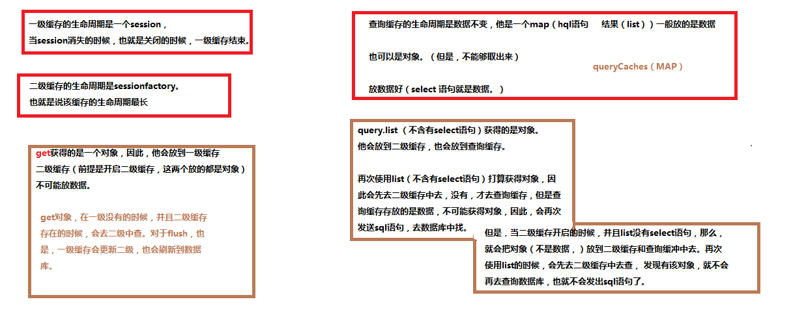

各种缓存的存储内容以及生命周期：
上图存在问题：list对于二级缓存只能存，不能取，get和load可以。也就是说，上图右边有问题。
一级缓存，二级缓存，存放的都是对象。一级存放的私有数据，在sessioncache中。存在的目的减少sql语句的发出，任何save，update，get等，都是在一级缓冲中完成，事务提交的时候，在发出sql语句。 生命周期为一个session
二级存放的公有数据，在SessionFactory中。包括类的和集合的二级缓存。数据一般不会改变，目的是生命周期为整个hibernate，每一个sessionfactory代表一个数据库的连接，可以有多个数据库连接。
查询缓存，存放的是数据。生命周期为数据不变，当数据改变的时候，就会消失。
各种缓存的开启方式；
一级缓存
代码级别开启，就是session。因此，可以通过sessionfactory的getcurrentsession（）或者opensession（)方法来获得该缓存。存放的是对象，用户的任何在一级缓存中的操作，一般不会发出sql语句，在最后事务提交的时候，发出sql语句，这就是一级缓存存在的目的。
二级缓存
由第三提供，因此需要jar包，总配置，针对类或者集合的配置。可以把类，或者集合放进二级缓存中，集合中存放的也是一些对象。因此，集合的个数为1，对象的个数为集合的size。
图解开启方式：
1 、在hibernate的配置文件中指定二级缓存的供应商

2 、开启二级缓存

3 、开启二级缓存的统计机制

4 、针对某一个类开启二级缓存（二级缓存使用的是read-only，表明二级缓存是只读的。不能修改，这个也是二级缓存存在的目的，）
在Classes.hbm.xml文件中
5 、针对某集合开启二级缓存读写策略为只读或者为读写
一级与二级缓冲的区别：
1、一级缓存存放的是实体对象的引用（即内存地址），而二级缓存存放的是对象中的数据（散列数据id:1 name:d1name）。
2、一级缓存没有关闭的情况下，再次查询同样的实体记录，返回的是对象的引用，因此两次从一级缓存中取出的对象内存地址一致。而一级缓存关闭后，从二级缓存中取出的数据因为是散列数据，需要重新封装到新对象中，所以，内存地址会不同。
查询缓存
依赖二级缓存，原因是querycaches在sessionfactory中，因此，必须依赖二级缓存，也就是说，二级缓存要有第三方，但是不一定开启。针对类的或者集合的二级缓存的读写粗略，也不用指定。
代码中，必须开启查询缓存：query.setCacheable(true);
这样，就可以使用查询缓存了。
抓取策略：就是怎样发出sql语句，子查询，连接查询，或者普通查询。
抓取策略
研究对象
研究怎么样提取集合的，该策略应该作用与set元素上
研究从一的一方加载多的一方
案例
查询cid为1的班级的所有的学生

研究对象
研究怎么样提取集合的，该策略应该作用与set元素上
研究从一的一方加载多的一方
案例
查询cid为1的班级的所有的学生


说明：通过一条sql语句:左外链接，把classes与student表的数据全部提取出来。
如果是如下的策略：
先查询classes，再次查询student

先查询classes，再次查询student。
查询所有的班级的所有的学生

该需求翻译过来含有子查询

如果含有子查询，必须用subselect
改进：

查询班级为1,2,3,4的所有的学生

总结
1、 研究对象是集合
2、 经过分析，如果sql语句中含有了子查询，则用subselect效率比较高
3、 如果页面上需要一次性把两张表的数据全部提取出来，用join效率比较高因为采用”join”为左外链接
4、 如果用select，先查询班级，后查询学生，如果查询班级的个数超过1个，会导致n+1条sql语句
5、 抓取策略是hibernate提供的一种优化方式而已